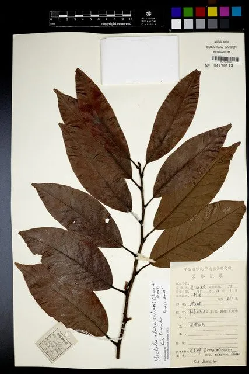

乔木 · 植物界
观光木 Michelia odora

木兰科含笑属常绿乔木，中国特有珍稀树种，花淡黄、芳香浓郁，聚合果硕大，为纪念植物学家钟观光而命名。
- 分类
- 门被子植物门纲木兰纲目木兰目科木兰科属含笑属
- 栖息环境
- 海拔 500–1000 米的山地常绿阔叶林，喜温暖湿润、多云雾的环境
- 地理分布
- 中国广东、广西、福建、江西、湖南、云南、贵州与海南等地
- 保护级别
- 中国国家二级保护野生植物；野生种群零星，天然更新困难
物种志
观光木为常绿乔木，高可达 25 米，树皮灰褐色并具纵裂纹，小枝、芽与叶柄均被黄褐色柔毛。叶片倒卵状椭圆形，长 8–17 厘米，上面深绿色，下面被锈色柔毛。花单生叶腋，淡黄色，芳香浓郁，花被片 9–10 枚，雄蕊群与雌蕊群均显著。聚合果长椭圆形，长 10–12 厘米，成熟时开裂，露出红色种子。
本种为中国特有种，分布于广东、广西、福建、江西、湖南、云南、贵州与海南等地，生于海拔 500–1000 米的山地常绿阔叶林中，喜温暖湿润、多云雾的环境与肥沃排水良好的酸性土壤。它树形整齐、花香浓郁，是优良的园林观赏树；木材轻软细致，可供家具与建筑。因天然林被采伐、野生种群零星，观光木被列为国家二级保护野生植物，各地已开展人工育苗与迁地保护。
形态与习性
- 株高可达 25 米，树皮灰褐色纵裂
- 花期3–4 月，花淡黄色、芳香浓郁
- 果期9–10 月，聚合果长椭圆形
- 光照幼树耐阴，成树喜光
- 水分喜湿润多雾，适宜年降水量 1200 mm 以上
- 土壤深厚肥沃、排水良好的酸性赤红壤
- 主要用途园林观赏、家具与建筑用材
趣味知识
- 观光木属名 Tsoongiodendron 与中文名都是为了纪念中国植物学家钟观光。
- 它的花淡黄色、香气浓郁，开花时整株可闻，是优良的芳香树种。
- 聚合果成熟开裂后露出鲜红色种子，常被鸟类取食传播。
- 观光木是木兰科中较为原始的类群，对研究木兰科演化有重要价值。